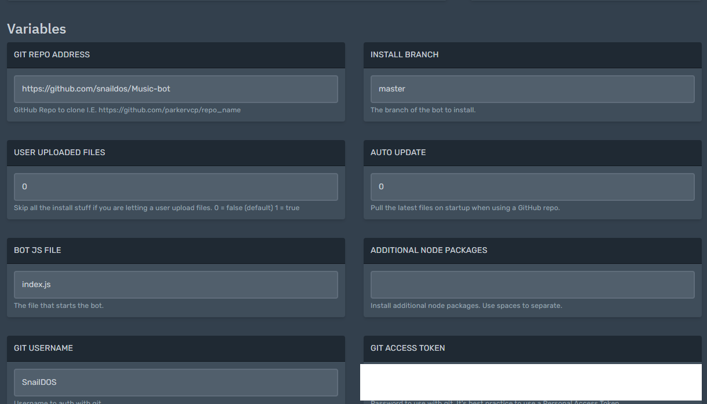

Join our discord, this won't work without it. https://invite.gg/snaildos
Head to our panel site, https://server.snaildos.com
Select register, enter an email, username and password.
Press signup, then press login.
Once done, head to ‘server’ and buy the free server.
You can select which type of serevr you want such as; discord.py or discord.js
Once done, press create.
Click manage to head to our main panel to configure.
Please wait a while while the server set's up.
How to install a Discord Bot on this service?

Follow the instructions below
You should be familiar with Git, if not, you will have a hard time.
On your git repo address, type in your GitHub Repo URL, install branch can/should always be master. Leave User uploaded files and Auo Update to default. On your Git USERNAME, type your username.
For the service to function properly, type your github acess token. For github: https://github.com/settings/tokens type that URL, press “generate” and then copy and paste it in. No documentary exists for GitLab currently.
After that, return to console and hit “start”. In a matter of minutes, your bot will start. Give your bot about 10-20 mins to load up for the first time.
Trouble-shooting
As a support technician in SnailDOS, I see many people stuff these things up.
Invalid Bot Token
The GitHub username, repo, or token is invalid, therefor, nothing is being cloned.
People have no idea how basic linux works, and get confused.
People who don't read the docs.
This gives you an idea on what I don't want to see. Anyone who wastes my time, will get banned from our services.